A step-by-step guide to planning and producing a video in the studio, written for someone new to animation. It covers every feature added in the November 2026 update: the automatic landscape, shot sizes, transitions, title and end cards, karaoke lyrics, Shot Doctor and Claude's look check.
I checked your preview of “Riding over the rainbow hill” shot by shot and compared it with how good 3D nursery-rhyme videos are made. The research came from studio and tool write-ups and from a study on pacing for preschoolers. The picture had five problems:
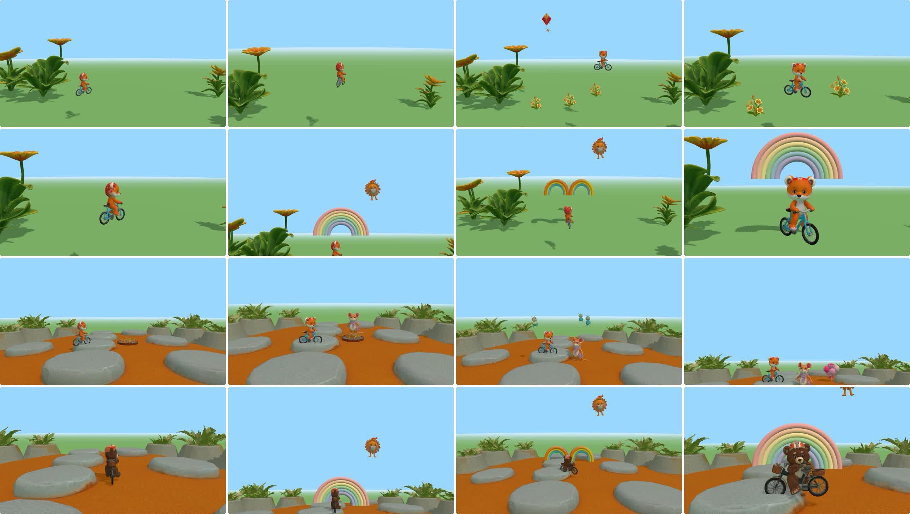
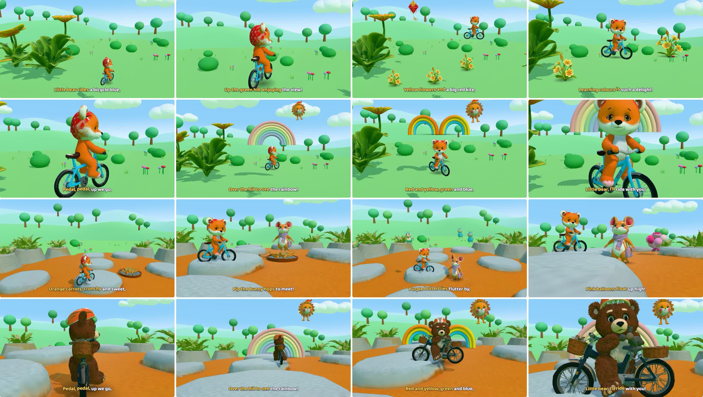
| New feature | What it does | Where |
|---|---|---|
| Landscape | Builds a gradient sky, drifting clouds, three layers of far hills that fade into haze, trees on the hills, flowers, bushes and grass around the scenery, and a ground that blends in. The colours come from your World Style. Stars appear at night. | Stage 4 → 🎨 Look, or a single shot |
| Better light | Colour-true tone mapping, soft light from the sky, a rim light behind the characters, softer shadows, and a contact shadow under everything standing. | Automatic |
| Shot sizes | Extreme wide, wide, full, medium or close-up. The camera frames each character by its real size, then a fitting pass makes sure nobody is cut off. Every still shot gets a slow push-in so it never looks frozen. | Shot editor → Camera |
| Sky objects stay in view | The sun, moon, kite or balloons stay inside the picture at a readable size, whatever the camera does. | Automatic |
| Transitions | Cut, dissolve, dip to white, iris or wipe. Auto mode dissolves at a new song section and uses an iris when the place changes. The video fades in and out. | Look (default) and each shot |
| Title and end cards | The song title pops up during the intro, and a “Bye-bye!” card shows during the outro. | Look |
| Karaoke lyrics | Words light up in your channel's accent colour as they are sung, using your Channel Identity caption style. | Look |
| 🩺 Shot Doctor | Checks every shot like a director: characters too small, cut off, hidden behind a prop, back to the camera, mostly empty sky, the same framing twice in a row, long still shots. Every problem has a one-click fix. | Stage 4 and Stage 5 |
| Shot thumbnails | A small picture of every shot in the shot list. | Stages 4 and 5 |
| 👁 Look check | Claude looks at pictures of a model and says whether it matches its name and description. | Stage 2 |
| Direction and feedback | Under every 3D result: the exact prompt it was made from, and a box for your notes. Claude revises the prompt from your notes and keeps applying them in later drafts. | Stage 2 card |
| Inspiration screenshots | Upload screenshots from videos you like. Claude writes a brief that takes about 80% of their ideas into your world (never copying characters or logos), and every Claude call follows it. | World Style |
| World landscape | The default landscape for every video, suggested by Claude from your World Style. | World Style |
| Comfort | “How this stage works” guides, a Stage 4 layout where the player stays in view, quick placement buttons, keyboard shortcuts, a “Before you export” checklist, and a “keep facing the camera while moving” option for riders and vehicles. | Everywhere |
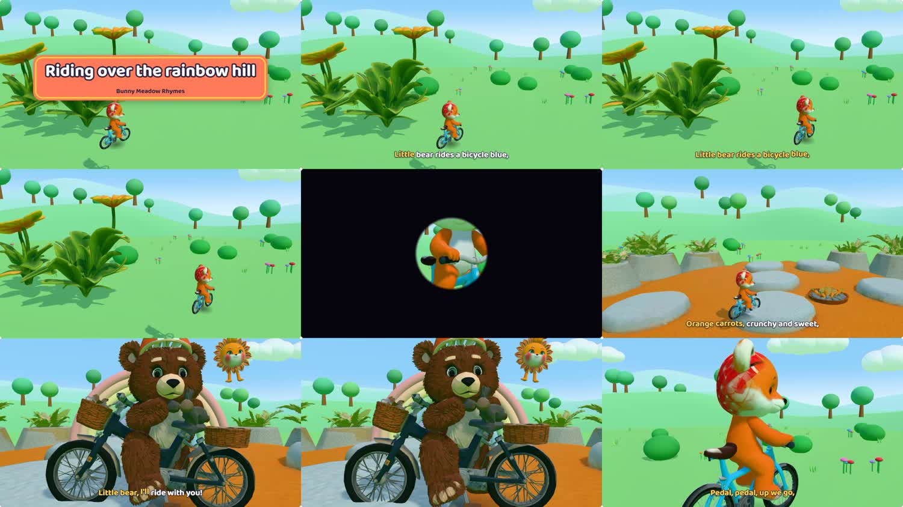
| New feature | What it does | Where |
|---|---|---|
| Real lip-sync | Each sung syllable gets a mouth shape (ah, ee, oh, oo, lips closed for m/b/p…). The mouth is painted into the character's skin, so it bends with the face, and it replaces the painted smile while singing. | Automatic |
| Life layer | Breathing, looking around, head bobs on loud syllables and a small body sway, so characters never stand frozen. | Automatic |
| Playground equipment | A seesaw, swings, a slide and a merry-go-round whose parts really move. The studio builds them itself, because Meshy makes one solid piece that can't tilt or spin. Characters ride them: astride the seesaw, sitting at the merry-go-round's rim, climbing the slide's ladder and sliding down. | Shot → setting → equipment |
| More ways to move | Skip, climb, kick a ball, twirl and sit. The dog can also sit, roll over, leap to catch and run zoomies. A move played along a path replaces walking, so skip + path gives a skipping journey. | Shot editor → Moves |
| Kite and balloons | The kite flutters on a string tied to the character's hand and can swoop. With float, balloons rise up and away. With rise, objects come up into place from below. | Props → motion |
| Rich landscape | The detail: rich option adds flower beds in curved bands, bunting, blossom trees, patchwork hills, a rainbow, drifting hot-air balloons and butterflies, so the whole screen is colourful. | World Style, Stage 2, Stage 4 |
| Cinematic camera | A crane move (starts high and wide, then sweeps down), a side angle for every move, low "hero" angles, push-ins, and a soft vignette (slightly darker corners). | Shot editor → Camera |
| Saved landscapes | You can save any landscape to My World, as the kind "Landscape". Stage 2 highlights landscapes that aren't saved yet or have changed since you saved them. | My World, Stage 2 |
| Boxless title and end text | Big bubbly rainbow letters that pop in, float and hop away, with sparkles. | Look |
| Background blur | Like a film camera: the characters stay sharp and the background goes soft, so young viewers' eyes stay on Mira and Mango. It's strongest in close-ups. You can turn it off or change it per shot. | Shot editor → Camera → Background blur |
| "Focus" landscape | Bright and colourful but calm: patchwork hills, blossom trees and a few flower bands far back, with nothing moving behind the characters (no bunting, butterflies or floating balloons). It's the best choice for toddlers. | Look → Extra detail → focus |
| Nothing goes through anything | Every frame, riders' legs, arms and tails are kept out of the seesaw, swings, slide and merry-go-round, and the dog sits on top of his seat. A test tool measures every shot and lists any overlap in centimetres. | Automatic · tools/testing/clearance.mjs |
Directing for young children (research summary): one clear action per shot, the one being sung. Keep it to at most three things to follow (two characters and one object), and put in the shot only the equipment that is being used. Avoid moving decorations behind the action. Keep the colour in big calm areas. Use the same action for the same chorus words every time.
Scenery is the set your characters stand and move on: a meadow, a farmyard, a bedroom. You make it in Stage 2 like any other model. Landscape is everything around the set out to the horizon: sky, clouds, far hills, trees and the ground beyond. The studio builds the landscape automatically for every shot, so your scenery only needs the area where the action happens. A small set is fine.
How much of the picture the subject fills. Good rhyme videos change size often. They open a new place wide, show the action in full and medium shots, and give the singer close-ups on important lines. Young children follow faces, so most shots should be full or medium.
| Size | What you see | Use it for |
|---|---|---|
| Extreme wide | The whole place, small characters | Opening a new place (rarely) |
| Wide | The place and the characters | Start of a verse, travelling |
| Full | The whole body fills the frame | Most action: dancing, riding, waving |
| Medium | Waist up | Two characters talking or singing |
| Close-up | Head and shoulders of one character | Key lines, emotions, the chorus hook |
The move says how the camera travels during the shot. Each move has a natural size; you can change it under Shot size.
| Move | What it does |
|---|---|
| Still (wide) | Holds the view with a slow push-in |
| Dolly in | Moves one size closer during the shot (wide → full …) |
| Pan | Slides sideways (“Pan amount” sets how far) |
| Orbit | A slow half-circle around the action |
| Tilt up | Looks up a little, toward the sky (sun, rainbow) |
| Follow | Tracks one character as it moves |
| Group | Keeps everyone standing in the frame |
| Close-up | Stays on one character's face |
A cut is the normal change inside a verse. A dissolve (soft cross-fade) marks a new section, such as verse to chorus. An iris (a closing and opening circle) marks a new place or the end. Dip to white is a flash for a magical moment. Too many effects are distracting, so leave the default on Auto.
Research on preschoolers (Lillard & Peterson, 2011) found that very fast, frantic cartoons left 4-year-olds less able to concentrate right afterwards. Keep shots around 3–8 seconds, one idea per shot, gentle movement, and repeat the chorus visuals when the chorus repeats.
cd "…\Production Studio", then npm.cmd start. Open http://localhost:5175. The bottom-left corner shows Assistant, FFmpeg and Paid generation.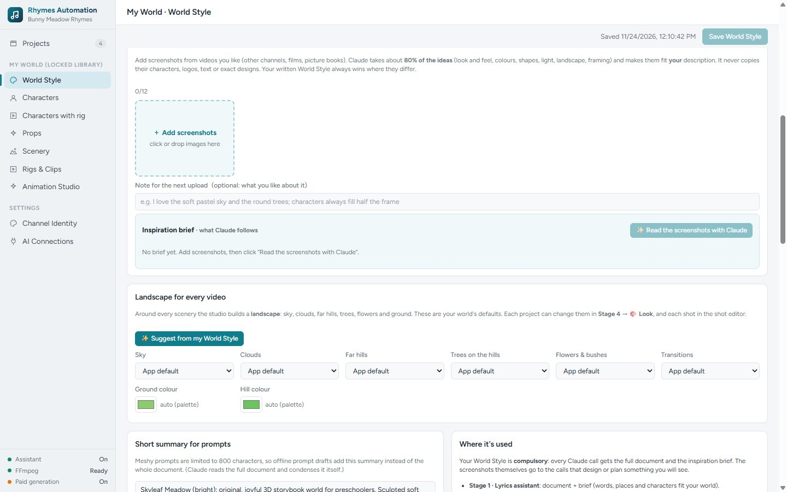
The landscape is never a separate model you approve. It is rebuilt from settings each time you press Generate Preview or Export, in three layers, where a later layer overrides an earlier one:
| Layer | Where | Use it for |
|---|---|---|
| 1 · World | World Style → Landscape for every video | Your channel's normal look. Every project starts from it. |
| 2 · Project | Stage 2 → Landscape (whole video), or Stage 4 → 🎨 Look | This song only, for example a lusher meadow. “Use world defaults” goes back to layer 1. |
| 3 · Place | Stage 2 → Landscape → each place | What is different around one scenery: time of day, more trees, a sunset sky. |
| 4 · Shot | Stage 4 shot editor → Landscape for this shot | One moment, for example many clouds on “clouds float by”. |
Colours come from the World Style palette (the Style Profile) unless you pick a ground or hill colour. Each shot's lighting (morning, day, sunset, night) recolours the sky. The landscape is final when you export: the MP4 uses exactly what the preview shows, and you can change it and export again at any time.
Every ✨ Claude action (analyze the lyrics, draft or revise a prompt, design the landscape, plan the shots, recommend music) first asks what Claude should use as reference. The chat assistants (Lyrics, Music) show the choice as a chip above the message box; click it to change.
| Choice | Claude uses | Pick it when |
|---|---|---|
| 🌍 My World | Your World Style description and inspiration brief (and screenshots). It creates fresh designs and does not base them on your existing characters. | A new character or place that must still look like your world |
| 🌍 + 👥 My World + my existing characters & designs | The same, plus your saved My World designs (descriptions and pictures). Stage 2 also offers them for reuse. | Most songs: your recurring cast and places |
| ✨ Something new | Only the description you paste in the box. The World Style is ignored for this request. | A one-off special (a winter episode, a new series idea) |
Your last choice for each action is remembered and pre-selected next time. Cancel stops the request; nothing is sent.
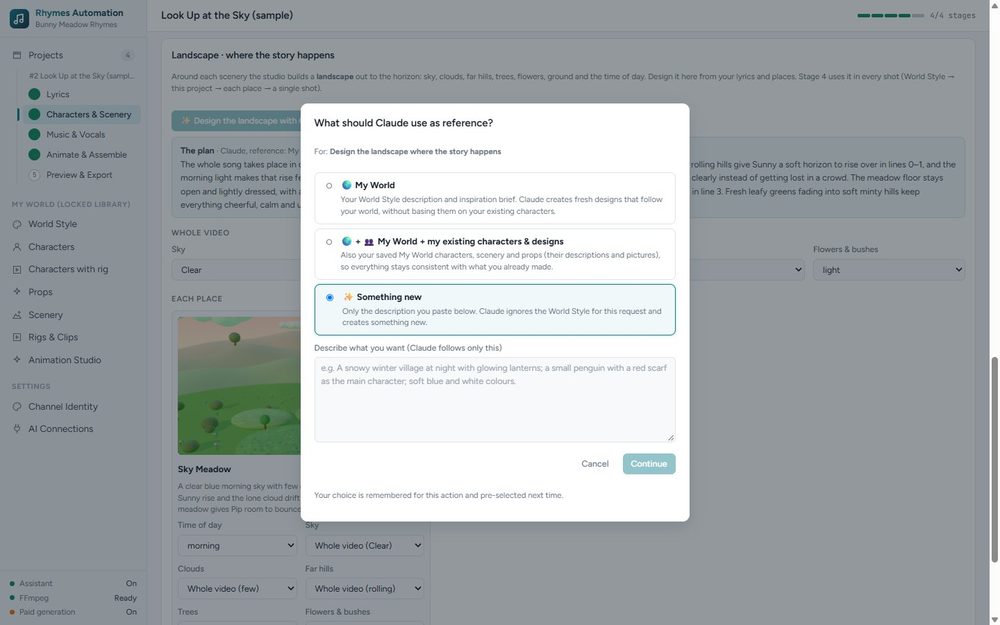
Answer these before you open the studio. They make every stage faster.
| Question | Good answer for a toddler video |
|---|---|
| What does the child learn? | One thing: colours, counting to 5, animal sounds, a routine (brushing teeth) |
| How long? | 1–2 minutes (12–20 sung lines) |
| Structure? | Verse 1 · Chorus · Verse 2 · Chorus. The chorus repeats word for word. |
| Who is in it? | 1 main character plus 1–2 friends. Use characters already in My World where you can. |
| Where? | One place per verse (two at most), in the same world |
| What do we see on each line? | One clear action per line: rides in, waves, points at the sky, jumps |
| Music? | 2–4 s of instrumental before the first line (title card) and after the last line (end card) |
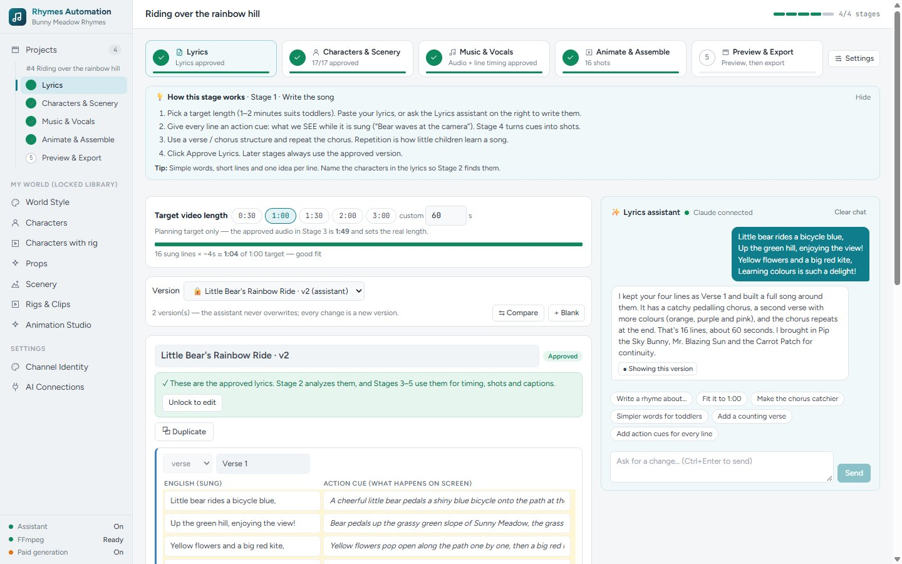
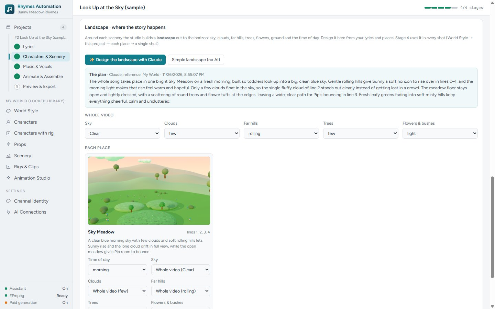
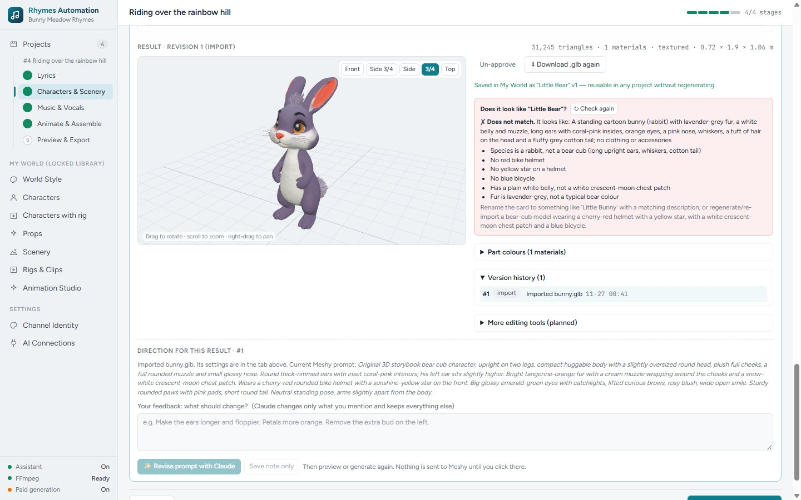
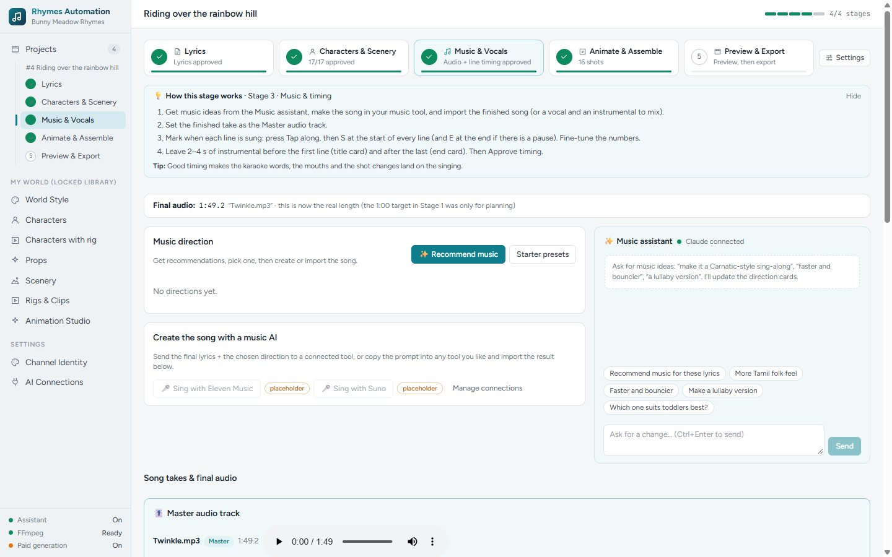
The screen has two halves. On the left are the player, the shot list with thumbnails and 🩺 Shot Doctor; they stay in view while you scroll. On the right is the shot editor for the selected shot.
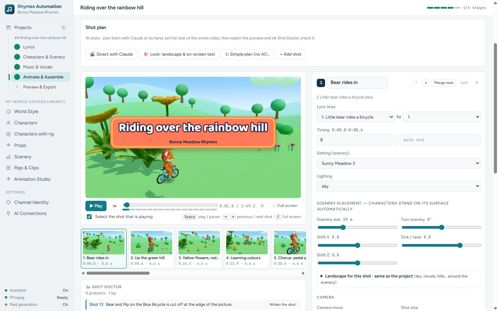
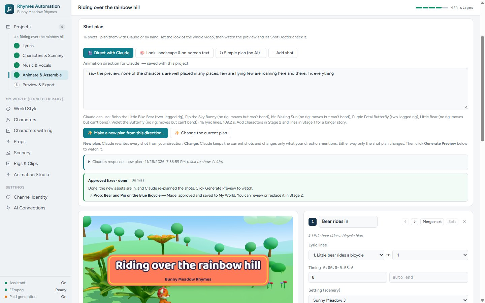
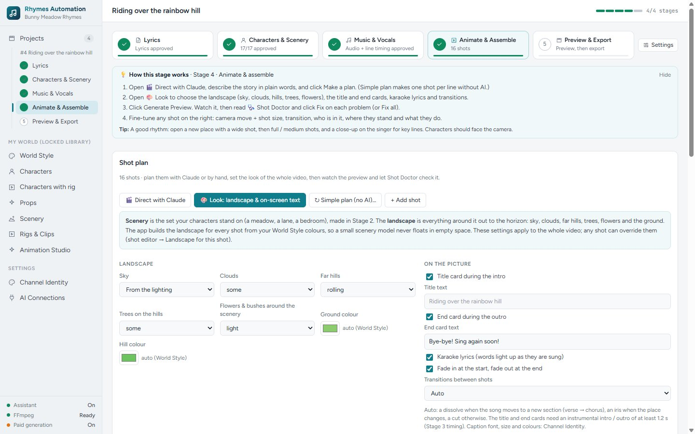
| Problem | Why it matters | One-click fix |
|---|---|---|
| Characters small in the picture | Toddlers follow faces and actions | Full shot |
| Out of the picture or cut off at the edge | The subject is lost | Group camera, or widen the shot |
| Hidden behind another object | For example a big rainbow in front of the bear | Move the object behind |
| Back to the camera | We should see faces | Face the camera, walk toward the camera, or keep facing the camera while moving |
| Mostly empty sky | Wasted picture | Lower the view (full shot) |
| Same framing as the previous shot | Variety keeps attention | Change the shot size |
| Long still shot (over 10 s) | Feels frozen | Slow push-in (dolly in) |
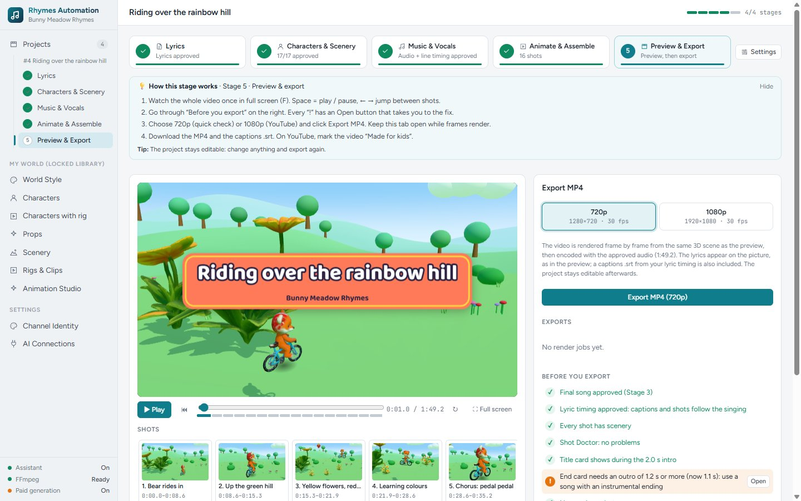
Make a short new project to learn the studio. Example: “Dotty the Duck counts to five”, 1 minute, two places (the pond and the meadow next to it). Tick each box as you go.
| You see… | Do this |
|---|---|
| A character floats or sinks | Quick → On the ground. Characters stand on the scenery surface automatically; a height of 2 m or more means “in the sky”. |
| The model faces the wrong way | Face camera, or set Turn. While travelling, untick “Turns to face where it goes”. |
| Characters are tiny | Shot size → Full or Medium (Shot Doctor fixes this). |
| The same character looks different between shots | Two different models are being used (in your project the orange bear in verse 1 is a different model from the brown bear in verse 2). Use one saved model throughout, and check the cast with 👁. |
| A model is not what its name says | 👁 Check with Claude, then rename the card or regenerate it from the feedback box. |
| No title or end card | The intro or outro is shorter than 1.2 s: change the timing (Stage 3) or the song. |
| Lyrics appear too early or late | Fix the line times in Stage 3; captions, karaoke and shots follow them. |
| The preview is slow | Close other tabs and apps. Imported models with very many triangles are heavy (the card shows the triangle count); Meshy models are already limited to about 30k. |
| Claude's plan ignores something | Read “Couldn’t do” in its answer. Approve its proposed fixes (new character or prop), or write a more specific direction and click Change the current plan. |
| Keys (player) | Space play / pause · ← → previous / next shot · F full screen · double-click the picture: full screen |
|---|---|
| Paid actions | Only buttons that say Meshy cost credits (preview about 3, model about 30, rig about 5). Anything with ✨ or 👁 uses Claude. Everything else is free and offline. |
| Where things live | Shots and look: Stage 4. Caption style and colours: Channel Identity. World colours: World Style. Reusable models: My World. |
| Good video recipe | 1–2 minutes · verse / chorus · 3–8 s shots · wide to open a place, full and medium for action, close-ups on the hook · faces toward the camera · the same cast and world every time. |
Sources for the research notes: industry write-ups on 3D nursery-rhyme production (whizzystudios.com, atlabs.ai, filmora.wondershare.com), stylized background and layering guides, and Lillard & Peterson (2011), “The immediate impact of different types of television on young children's executive function”, Pediatrics.